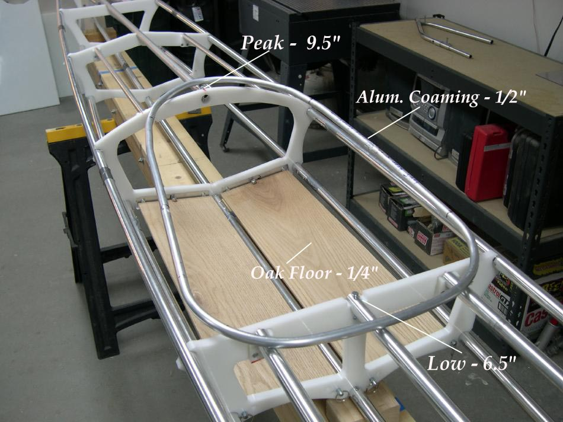

| Sea Glider | Menu Last Page Next Page |
|

The 24in X 16in (61 X 40cm) 2-piece aluminum tube coaming will be part of the skin. This setup allows easier assembly and folding. The Sea Glider uses the same coaming and frame folding setup found on the recently modified Sea Rider ( 5 pages). Use the (BACK) key to return. |
|